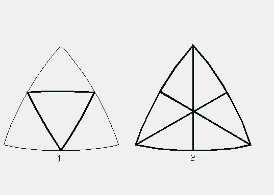
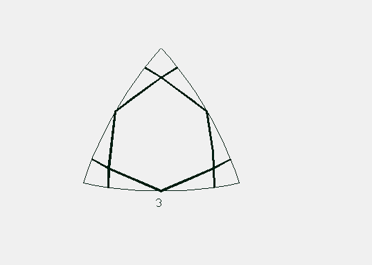
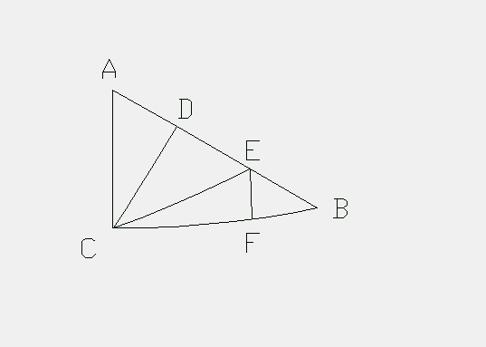

The icosahedron has 3 goups of spin axes. These are
Below I show which axis group grenerates which great circle arcs across the icosahedron's faces. The bold arcs are generated by the associated axis group as labeled.
 The surface of the spherical icosahedron can be covered by 60 "positive" and 60 "negative" (total = 120) spherical triangles known as the icosahedron LCD spherical triangle. This is the spherical triangle shown in bold in the above illustration.
The next illustration gives the icosahedron's LCD triangles labels for the following tables.
Now for the tables of the spherical icosahedron's LCD spherical triangle angles.
| LABEL | ANGLE | Q.M.Equ. |
|---|---|---|
| CAD | 60.000 000 000 | asin(3,3) |
| EBF | 36.000 000 000 | |
| ACD | 31.717 474 411 | |
| DCE | 37.377 368 141 | |
| ECF | 20.905 157 448 | 45+acos(1,2) |
| ADC | 90.000 000 000 | acos(0,1) |
| CDE | 90.000 000 000 | acos(0,1) |
| BEF | 54.735 610 317 | acos(2,3) |
| CED | 54.735 610 317 | acos(2,3) |
| CEF | 70.528 779 366 | asin(8,8) |
| BFE | 90.000 000 000 | acos(0,1) |
| CFE | 90.000 000 000 | acos(0,1) |
| LABEL | ANGLE | Q.M.Equ. |
|---|---|---|
| AC | 20.905 157 448 | 45+acos(1,2) |
| AD | 10.812 316 964 | |
| BE | 13.282 525 589 | |
| BF | 10.812 316 964 | |
| CD | 18.000 000 000 | |
| CE | 22.238 756 093 | acos(15,24)-30 |
| CF | 20.905 157 448 | 45+acos(1,2) |
| DE | 13.282 525 589 | |
| EF | 7.761 243 907 | |
Usage Note: My work is copyrighted. You may use my work but you may not include my work, or parts of it, in any for-profit project without my consent.